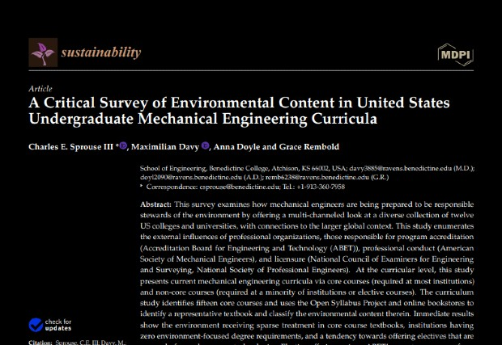
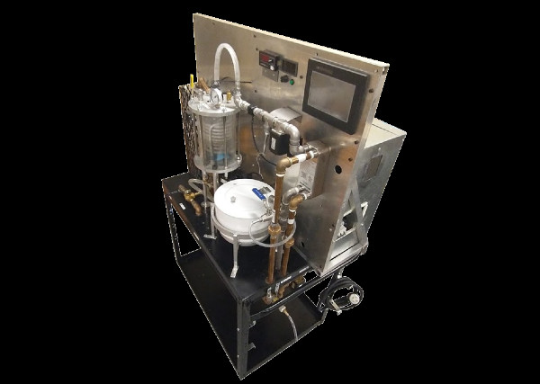
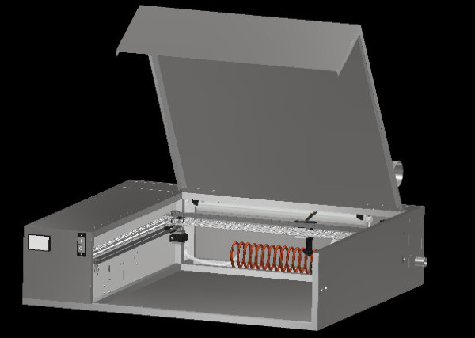
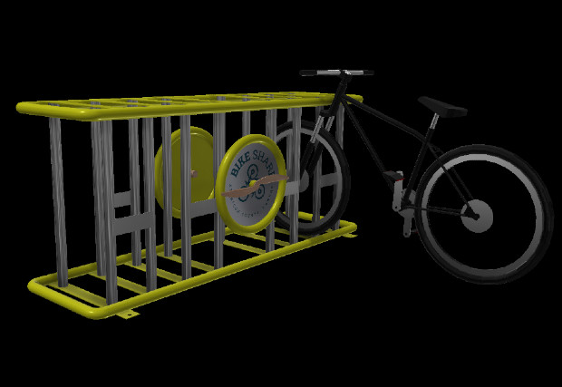
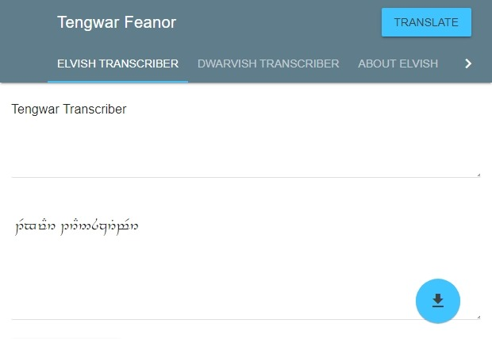
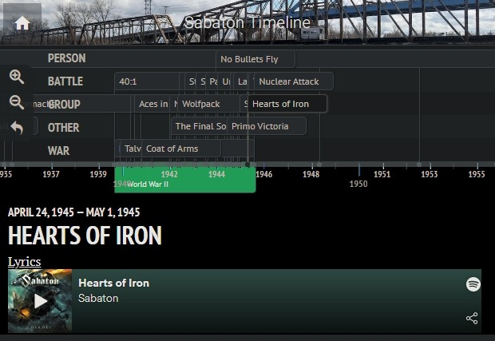
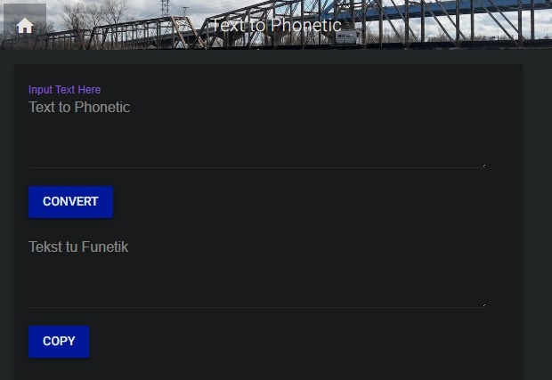
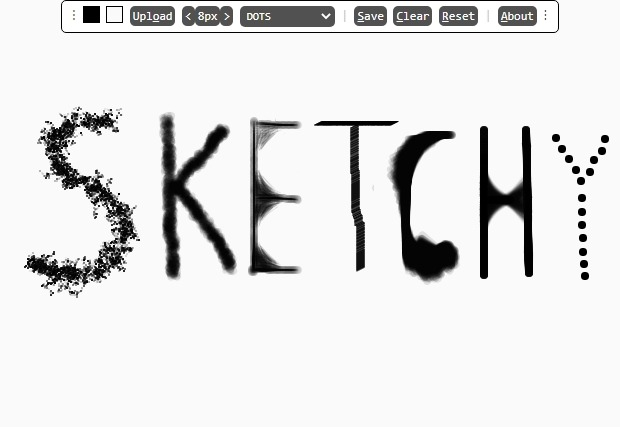
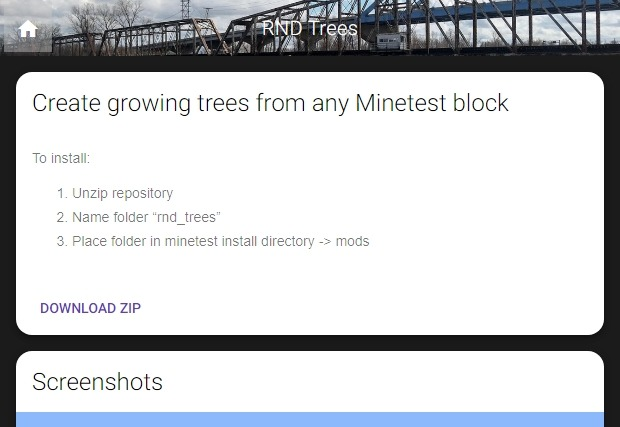
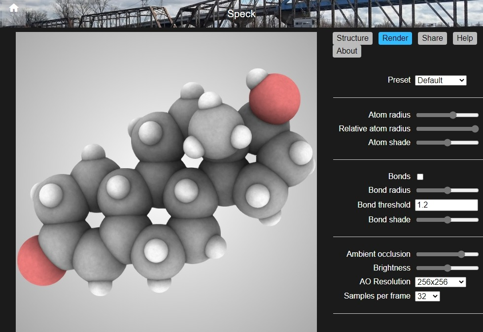

A Critical Survey of Environmental Content in United States Undergraduate Mechanical Engineering Curricula
I co-authored this article, published in Sustainability Volume 13 Issue 12, with Charles Sprouse, Anna Doyle, and Grace Rembold. The article examines how mechanical engineers are being prepared to be responsible stewards of
the environment by offering a multi-channeled look at a diverse collection of twelve US colleges and universities, with connections to the larger global context. The results show the environment receiving sparse treatment in core
course textbooks, institutions having zero environment-focused degree requirements, and a tendency towards offering electives that are narrowly focused on green technologies. Overall, the environmental education mechanical engineers
are receiving is insufficient in amount and lacking in scientific and ethical foundation.

Process Trainer/Stirred Reactor
For my Senior Design project at Benedictine College, I, along with two teammates, designed and built a stirred reactor/process trainer for the Benedictine College School of Engineering. The machine is used as a process trainer for Engineering students
studying control systems and as a stirred reactor by Chemical Engineering students to run industrial processes. The project was described as "a superior senior design project" and "a landmark project" for the School of Engineering.

Laser Cutter
For my Honors Program senior project, I designed a CNC laser cutter for the Benedictine College School of Engineering Shop. The cutter has a working area of 1 yard square. It features a 45 Watt CO2 laser, air assist, touchscreen control, and an infrared
monitoring camera. The device has a cost of $2,500, far less than comperable commercial options. The project involved a wide range of engineering concepts including circuits, computer aided design, mechanical, thermal, and optical
material properties, thermodynamics, fluids, and control systems. It utilizes as a variety of fabrication methods including CNC machineing, 3d printing, and welding.

Bike Share
In the spring of 2018 I was one of a small group of Benedictine College students who, under the sponsorship of the College's Discovery Day program, designed a series of bicycle racks for the City of Atchison's new bike share program. The bike racks were
intended to be representative of local history; my design was made to resemble a biplane in honor of Amelia Earhart, who was born in Atchison.

Tengwar Transcriber
Tengwar Transcriber is dedicated to the languages of Middle Earth. Its main features are Elvish and Dwarvish transcribers, but it also features a selection of Tolkien's poems, maps of middle earth, and more. A limited set of features is available as Windows
and Android apps.

Sabaton Timeline
Sabaton Timeline is an interactive timeline of the historical persons and events depicted in the songs of the Swedish power metal band Sabaton. It features the band's notes on the songs and information on the subjects they depict.

Text to Phonetic
Text To Phonetic is a pronunciation guide for English speakers who have trouble understanding the International Phonetic Alphabet. It uses a custom-compiled dictionary to convert English words or sentences to the phonetically-spelled equivalent.

Sketchy
Sketchy is an online drawing program. It features a variety of advanced brushes, as well as basic features such as image export, changing image/color backgrounds, etc.

RND Trees
RND Trees is a mod for the Minecraft-like voxel game Minetest that adds naturally-growing trees to the game. The trees use a growth algorithm to behave like real trees, branching and growing leaves gradually based on growth parameters (which can be tuned
to simulate actual tree species) and available light.

Speck
Speck is a WebGL-powered 3D atomic structure renderer. Speck is an open-source project created by Rye Terrell, who has not maintained it since 2015. My version remedies a major inconvenience of the original, that of finding properly formatted molecular
models to import. An integrated search box allows searching of a database of structure files by compound name, as well pulling information about the selected compound from Wikipedia.